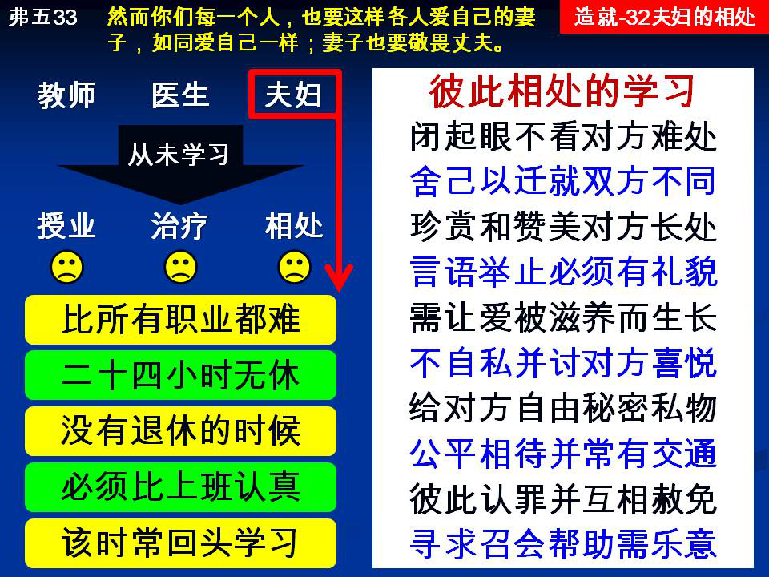

诗歌：补 312首、609首
重要经文：
歌罗西书三章十八至十九节：作妻子的，要服从丈夫，这在主里是相宜的。作丈夫的，要爱妻子，不可苦待她们。
以弗所书五章二十二至二十三节：作妻子的，要服从自己的丈夫，如同服从主；因为丈夫是妻子的头，如同基督是召会的头；祂自己乃是身体的救主。
哥林多前书十三章四至五节：爱是恆久忍耐，又有恩慈；爱是不嫉妒；爱是不自夸，不张狂，不作不合宜的事，不求自己的益处，不轻易发怒，不计算人的恶，
纲目要点：
壹 要花工夫学习如何作丈夫？如何作妻子？
贰 要闭起眼睛不看对方的难处。
参 要学习迁就。
肆 要学习欣赏对方的长处。
伍 必须有礼貌：话语、衣着、举动、声音。
陆 必须叫爱生长。
柒 不能自私。
捌 必须给对方有自由，秘密，私有物。
玖 必须公平、要开夫妇会议。
拾 必须有认罪有赦免。
拾壹 好的召会需要有好的家庭来维持。
信息选读：
要花工夫学习如何作丈夫如何作妻子
今天我要盖一所房子，我只敢请一个人是作土木工程师的。没有学过土木工程的，我怕他，我不放心。同样，今天一个人要作丈夫，要作妻子，如果没有学过，我也不放心。就是因为我们成年了，职业也有了，养家的能力也有了，对象也有了，所以就结婚罢。请你记得，家庭中的难处，夫妻中的难处，就是从没有预备起的。两个人好像忽然间被人拖到婚姻里，被人请去作丈夫，被人请去作妻子，一点预备都没有，这一个家庭定规不好。所以我们要看见说，在我们一生之中，不管作什么事，总得有一点学习，总不敢突然而作。我们必须有一点预备，必须有一点学习，才能去作。同时我们要看见说，在世界上，没有一个职业比作丈夫更困难，没有一个职业比作妻子更困难。所有的职业都是有钟点上下班的，只有这一个职业是一天二十四点钟不停的。所有的职业都有退休的时候，只有这一个职业没有退休的时候。 所以，所有已经结婚的弟兄姊妹，你们应当学习，花工夫在神面前负责的对付。这一个比任何的职业更困难。你们在神面前应当花工夫学。盼望你们今天就起首要学。 人一结婚之后，第一件要学习的事，就是要闭起眼睛来不看 两个人住在一起作夫妇，一天过一天，一年过一年，也没有假期，一直是不离开的。你有够多的时间来找出对方的弱点，你有够多的时间来找出对方的难处。所以，你必须在神面前学习，一结婚之后，眼睛就要闭起来。结婚的目的，不是为着看出对方的难处。她是你的妻子，她不是你的学生。他是你的丈夫，他不是你的徒弟。所以并不需要你找出他的难处来帮助他。千万不要找出他的弱点来更改他。你们如果在这件事情上注意，家庭就建造在坚固的根基上。就像我已经说过的，你们在没有结婚之前，眼睛要张得很大，要看得明白，所有的难处都要好好考虑。但是，等到已经结婚之后，就不管明白也好，不明白也好，从今天起就不要求明白。你如果要吹毛求疵，你很有机会可以找出来。神把你们两个人摆在一起，此后还有五十年，在这五十年之中，你们很有机会找出对方的弱点来。所以所有已经结婚的弟兄姊妹，必须看见说，结婚之后，第一件事就是闭起眼睛，不看对方有什么弱点。
夫妻彼此珍赏对方的长处
每一个人都应该学习看见对方的长处，看见对方好的地方，看见对方美的地方。在英国，有一位姊妹嫁给一个弟兄。一生一世，这一个弟兄从来没有说她作得好。这位姊妹一直挂虑说，我作妻子失败了，我作基督徒失败了。她一直挂虑到生了肺病，后来就死了。在她快要死的时候，她的丈夫对她说， 『你如果死了，我不知道怎么作，因你作了许多好事。你如果去世，我们这一个家庭怎么办？』这一个妻子就问他， 『你为什么不早一点说？』妻子说， 『我一直觉得我不好，我责备我自己。你一次都没有说我好，我忧愁，我挂虑，我一直以为我不对，所以我病了，要死了。』这是一件真实的事。她的丈夫到她要死时才告诉她，在家庭里应当多讲几句好话。
在家庭里必须有礼貌
没有礼貌，乃是一件可憎恶的事。人除了对自己以外，无论对谁都应该有礼貌。不管一个朋友多熟，你一缺少礼貌，你就失去他。不管人和你多熟，你一失去礼貌，你就失去他。保罗在哥林多前书十三章告诉我们说，爱是不失礼的；爱不会没有礼貌。请你记得，在家庭里的难处，许多时候都是因为一些小小的事。一个人最没有礼貌的时候，常常就是在家里的时候。有许多人以为，妻子是我最熟的人，丈夫是我最熟的人，因此就把礼貌丢失了。请你记得，人生的接触所以有意义，所以美丽，和礼貌有很大的关系。一把礼貌拿走，人生丑恶的方面都显出来了。所以，不管人是多熟，礼貌还是应该维持。有一个弟兄解释得很好，礼貌好像机器里面的滑润油，机器有了滑润油，运转就很顺利了。这是真的。两个人的相处一没有礼貌，摩擦就发生了；一没有礼貌，不舒服的感觉就生出来了。所以，在家庭里，许多时候要学习说『谢谢』 。许多时候要说『对不起』 。许多时候，所谓礼貌上的话都应该有，像『谢谢』 ， 『可不可以』 ， 『对不起』 ， 『请』诸如此类的话。如果你把这些话一减少，连朋友都交不成功，何况在家庭里。 『爱不失礼』 ，是基督徒特别应该记得的。要学习在家庭里说『对不起』 ，说『谢谢』 ，问『可不可以』 。在家庭里要说有礼貌的话。不自私是家庭里非常要紧的一个条件
你不能活出来不像一个结婚的人。一个人结婚，林前七章说，要讨对方的喜悦。家庭的难处，恐怕自私算是最大原因之一。所以，我们要看见，自私是大难处。我们要学习感觉对方的感觉，要学习摸出对方的痛苦，摸出对方的喜乐，要知道对方所怕的，要知道对方所恨的，要知道对方的难处，要知道对方的倾向。有许多男的，结婚之后，在家庭里没有想别的，就是想他是全宇宙的中心，好像整个宇宙都是环绕着他。今天我娶一个妻子，接到我家里来，是为着我生活的利益，是为着我生活的好处。结果，这个家庭定规出事情，如果一个妻子以为说，我是宇宙的中心，所有的人都应当为我而活，所有的人都应当为着我的喜乐。我找到了一个人，就能够达到我奴役的目的。所有的人都在她的四围，她是中心。现在她把丈夫拿来，要达到她的目的。你马上看见，这一个婚姻定规失败。因为，这是利己的婚姻。
必须有认罪有赦免
基督徒作错了事，基本的原则乃是认罪。基督徒不是作错了事盖起来，或者下一次不作就是了，这不是基督徒。所以，一切作错了事的都得认罪。每一次在夫妻之中有把事情作错了的，就得悔改认罪说，这一件事我作错了。
好的召会需要有好的家庭来维持
在神面前，一不小心的学，家庭的难处，就都是召会的难处。请你们记得，一个人在家庭里和妻子不能同心，不能同居，就绝不能在召会里和弟兄姊妹同心。这是一定的。不能说，在家庭里和妻子大吵大闹，在召会里还能大唱阿利路亚。好的召会，需要好的家庭来维持。（摘自初信造就第三十二篇）
课程复习：
一 为何要花工夫学习如何作丈夫如何作妻子？
二 人一结婚之后，第一件事要学习的是什么事情？
三 夫妻彼此之间如何学会珍赏并有礼貌？
四 为什么不自私是在一个家庭里非常要紧的条件？
五 夫妻之中若是有人做错了事，该如何操练呢？
辅助图表：
